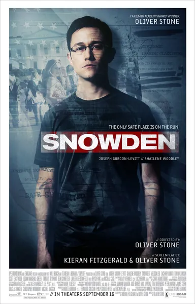

Фильм · 2016 · Драма, Триллер
Военный с безупречной карьерой и патриотическими убеждениями становится самым разыскиваемым человеком на планете. Оливер Стоун прослеживает путь Эдварда Сноудена: от травмы, полученной на службе, и работы в ЦРУ — через Гонконг — к гостиничному номеру, где трое журналистов и четыре ноутбука меняют представление мира о приватности. Это фильм о том, что «государственная тайна» и «тайна от государства» — разные вещи, а цена этого различия — ваша личная жизнь, хранящаяся в базах данных.
A soldier with a perfect career and patriotic faith becomes the most wanted man on the planet. Oliver Stone traces Edward Snowden's path: from an army injury and CIA work, through Hong Kong, to a hotel room where three journalists and four laptops change how the world understands privacy. A film about how 'state secret' and 'secret from the state' are different things — and the price of the difference is your personal life sitting in databases.
← Вернуться в каталог IT Movies